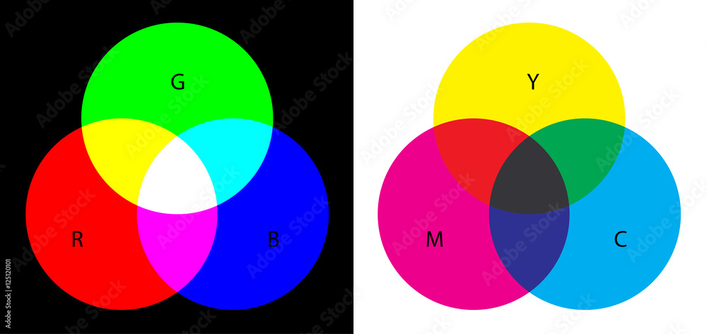
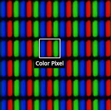
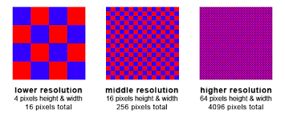

Kleurenmodellen
Welkom op deze pagina met uitleg over de werking van RGB en CMY. Er zijn ook interactieve widgets om mee te spelen!
RGB
RGB staat voor Red, Green, Blue. Deze manier van kleuren tonen werkt door als standaard kleur zwart te vertonen en daar, op basis van de 3 RGB-waardes, een kleur bovenop te maken. Als er bij een van de RGB-waardes een aanpassing wordt gedaan door bijv. RGB(255,0,0) dan krijg je rood. Hieronder staan een paar voorbeelden van RGB-waardes — klik op een cirkel om te selecteren.
CMY
In tegenstelling tot RGB gaat CMY van licht naar donker in plaats van donker naar licht. Bij het CMY-kleurenmodel heb je 3 basiskleuren: Cyaan, Magenta en Geel. Dit kleurmodel wordt veel gebruikt door printers omdat ze (vaak) op wit papier printen. Omdat de donkerste kleur die je kunt bereiken niet donker genoeg is, hebben printers vaak naast CMY ook nog een aparte zwarte inkt — de letter K staat voor "Key". Gebruik de sliders hieronder om te zien hoe de drie kleuren mengen.

Pixels
Schermen bestaan uit groepjes van 3 kleine lampjes en werken meestal met RGB — je hebt in je scherm dus heel veel groepjes van rode, groene en blauwe lampjes. De resolutie is de hoeveelheid van die groepjes in je scherm. Tegenwoordig zijn de meeste goedkope beeldschermen 1920×1080 pixels (FHD), maar je hebt ook schermen die 7680×4320 pixels (8K) zijn. Hoe hoger de resolutie, hoe meer computerkracht er nodig is.

